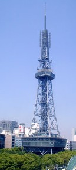
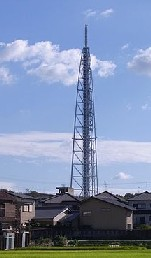

Free talk 雑談 .
（362）名古屋スカイツリー？
名古屋のテレビ塔は高さ180Ｍ、どうこういう高さではない。しかし11,954年（昭29年）に完成した当時は、日本一の高さを誇った。美しいフォルムと相まって、それ以来 名古屋のシンボルの一つとなっている。ちなみに昭和29年は、中日ドラゴンズが日本シリーズで優勝した年でもある。

ところがアナログからデジタルへ切り替えで新電波塔が必要となった。東京は都心にスカイツリーを造ったが、名古屋は都心に用地がない。そこで近くの小都市の丘陵地に新電波塔を作った。
しかし新電波塔のニュースや記事は、ほとんど無かった。数年前 完成したという話は聞いたが、どんなモノができたのか多くの人が知らない。名古屋近郊の住民として、ふと気になった。で ネットで検索してみたら、あった。

なんとまぁ....話題にもならないので大した塔ではないだろうと思っていたが、まさか民家の裏庭？に立っているとは......(>_<)